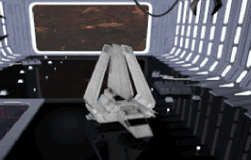

The ship began to tremble as we hit the atmosphere, the turbulence making me glad I was wearing the restraining belts. Outside the intense friction heated up the hull, and the window, despite numerous coatings of special material to prevent it, began to glow white-hot. I was beginning to wonder how the pilot could still see to navigate, when I noticed he was no longer looking out the front. His attention was fixated upon the controls in front of him. I could only hope and pray that the sensors were not as affected by the reentry as the viewscreen.
The cockpit windows remained blocked for some time, but gradually the view became clear again, and the surface of the planet was visible. The ground was rocky, at least where we were, and the planet was run through with dark cracks, deep canyons stretching towards the horizon and beyond. It was nearing dawn on this side of the planet, and long shadows lay across the landscape.
The Y-wing flight leader barked off something through the speaker, and the pilot responded, but I was too busy studying the planet to notice. I turned back in time to see the three ships veer off toward one of the many canyons, leaving us on our own. We too altered our course and headed down one of the crevasses. The pilot seemed to know what he was doing, and calming whisked us down the trench. I was reminded of the Death Star simulator runs at the academy as I watched the cliff walls hurl by us.
I was pressed hard against the restraints as the shuttle suddenly banked toward the right. I felt a momentary flash of panic, but it dissapated as I noticed the gaping mouth of the shuttle bay looming ahead of us. The wings to either side slowly came up as we decelerated. His hands moving rapidly, the pilot maneuvered us through the opening.
A muffled thud came from underneath and the cabin shook slightly as the landing gear touched down. With a few more flicks of switches the pilot shut off the repulsors, and killed the engines. Then he turned and fixed his gaze upon me.
"Welcome to the Crow's Nest."